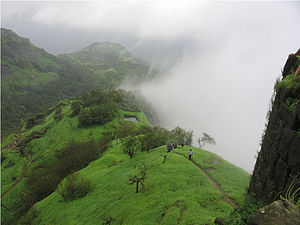
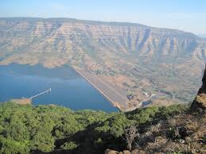

Maharastra Is surounded by the Sayadhri mountain range and hence it has many hillstations which are major tourist attractions in the state
-
LONAVALA

It is a hill station located between Mumbai and Pune around 150 to 200 km away from both
Best times to visit : MONSOON,WINTER,AUTUMN. -
Matheran

This hill station is located towards north of the Mumbai city
it is a very popular trekking hill .
An oldschool coal fueled train runs in the hill .
Best times to visit : AUTUMN,WINTER. -
Mahabaleshwar

This is a gem to the westeqrn hill .
Place is located on the bank of Chatrapati Shivaji Lake.
It a peacefull hillstation/town
many schools are located in a town near thee hillstation called Panchgini.
best time to visit: AUTUMN,WINTER,MONSOON.